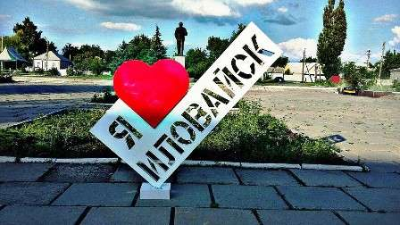
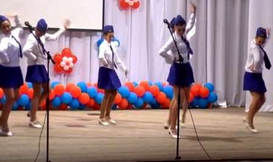
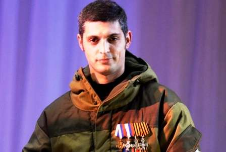
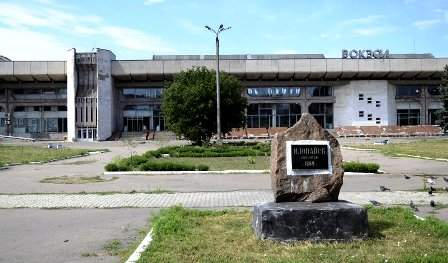
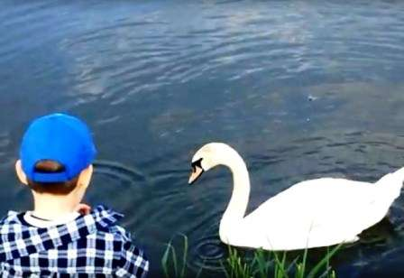

Далее
Последние события из жизни города

Традиционная плановая встреча жителей Иловайска с и.о. главы администрации Харцызска Александром Левченко началась с обсуждения. вопросов наведения порядка в городе.

День железнодорожника для Иловайска - праздник чуть не главнее Дня города. Да и как по-другому, если практически каждая иловайская семья так или иначе причастна к ДонЖД, а региональное отделение - это и градообразующее предприятие, и спонсор крупных мероприятий, и помощник в содержании городской инфраструктуры.

19 июля, легендарному комбату Михаилу Толстых, исполнилось бы 38... Михаил, как и тысячи жителей Донбасса, в 2014-м ушел в ополчение, встав на защиту родного края. В мае воевал под Славянском, потом пришлось отстаивать родной Иловайск.

Недавно и.о. заместителя министра транспорта ДНР Марина Шевкаленко провела прием граждан в общественной приемной председателя ОД «Донецкая Республика» Александра Захарченко в Иловайске.

Недавно жители Иловайска на своем городском ставке заметили пару белых лебедей. Если верить рассказам очевидцев, Первый городской пруд в этом году впервые стал пристанищем для лебедей, птиц, крайне редко встречающихся в окрестностях большого Харцызска
Согласно распоряжению главы ДНР Александра Захарченко о круглосуточной подаче воды в городах республики, руководители компании «Вода Донбасса» и водоснабжающих организаций должны обеспечить выполнение распоряжения или хотя бы рассмотреть техническую возможность такой подачи, промониторить состояние трубопроводов и объемов потребления."При подготовке второго этапа мероприятия были привлечены новые силовые ведомства, была тщательно обследована территория, добавлены патрули, привлечены саперы и взрывотехники, приняты также другие меры, о которых я не хотел бы говорить. Так что уровень организации соответствует требованиям к мероприятиям самого высокого уровня", — сообщил начальник военной полиции ДНР Виктор Аносов.
Сегодняшние состязания начались с эстафеты, в которой примут участие три команды по два танка.
Им предстоит пройти три круга по полигону. Как уточнили в Минобороны ДНР, общая длина дистанции составляет 16,7 км. На этом пути танкистам предстоит преодолеть условные минные поля, эскарп (противотанковый ров), выполнить задание по обнаружению цели, а также поразить из главного танкового орудия и зенитного пулемета условный вертолет противника. В случае непопадания в цель, экипаж теряет очки.
В отличие от предыдущих этапов танковых соревнований, зрителей на полигоне сегодня собралось мало.